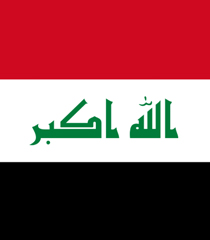
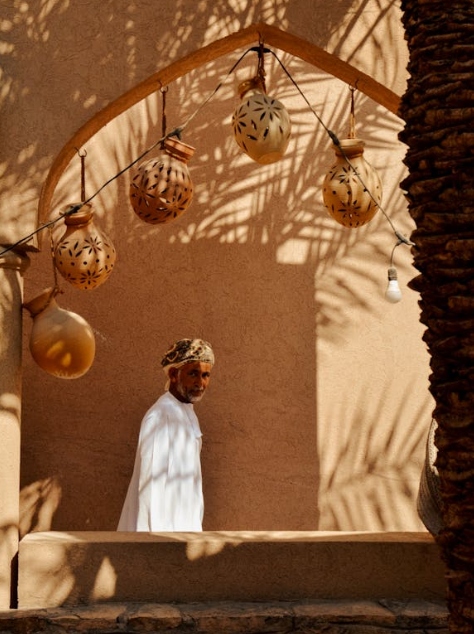

Baghdad
8.141.120 Resident
Iraq
33.33° LU, 44.4° BT
Get More Information

Baghdad
View all citiesIraq, officially the Republic of Iraq, is a country in West Asia. Located within the geo-political region of the Middle East, it is bordered by Saudi Arabia to the south, Turkey to the north, Iran to the east, the Persian Gulf and Kuwait to the southeast, Jordan to the southwest, and Syria to the west.
Images Credit
Bandung
Asia Africa
City Network
Quick Link
Get in touch
Need Information?
+62 81318667479
bapperida@bandung.go.id
© BAACN - All rights reserved